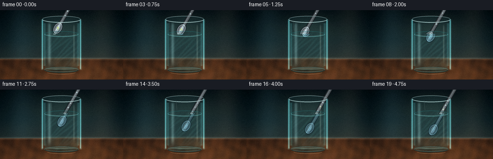
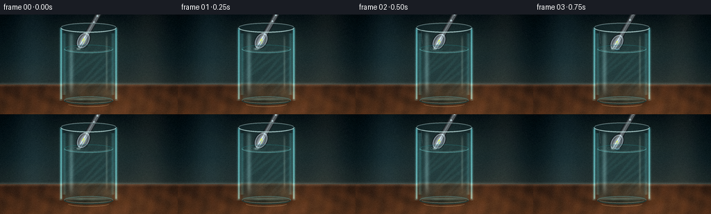

CODING AGENTS AS PIXEL WORLD MODELS
traex/DeepSeek-V4.1-Flash · phygen_072
点击播放 · 原生 RGB 像素
逐轮保存的候选
回放视频、检查图与代码变化。
每份候选均可单独播放。实际图片检查记录在下方工具轨迹中。
候选 01播放与检查图
点击播放 · 原生 RGB 像素


展开代码变化
--- 上一保存版本
+++ 本次保存版本
@@ -0,0 +1,651 @@
+from pathlib import Path
+
+import cv2
+import numpy as np
+from PIL import Image, ImageDraw, ImageFilter
+
+import artifact_io
+
+
+ROOT = Path(__file__).resolve().parent
+WIDTH, HEIGHT = 256, 144
+FRAME_COUNT, FPS = 20, 4
+SS = 4
+W, H = WIDTH * SS, HEIGHT * SS
+
+# Scene geometry, in final-video pixels before supersampling.
+GLASS_CX = 127.5
+GLASS_TOP = 19.0
+GLASS_BOTTOM = 124.0
+GLASS_R_TOP = 40.5
+GLASS_R_BOTTOM = 35.5
+WATER_Y = 49.5
+TABLE_Y = 101.0
+
+
+def sc(value):
+ return int(round(value * SS))
+
+
+def canvas_from_array(array):
+ return Image.fromarray(np.clip(array, 0, 255).astype(np.uint8))
+
+
+def rgba_from_array(array):
+ return Image.fromarray(np.clip(array, 0, 255).astype(np.uint8))
+
+
+def smoothstep(a, b, x):
+ q = np.clip((x - a) / (b - a), 0.0, 1.0)
+ return q * q * (3.0 - 2.0 * q)
+
+
+def make_background(frame_index):
+ yy, xx = np.mgrid[0:H, 0:W].astype(np.float32)
+ x = xx / SS
+ y = yy / SS
+
+ # Cool studio wall with a warm pool of practical light behind the glass.
+ top = np.array([10, 22, 27], np.float32)
+ mid = np.array([27, 48, 52], np.float32)
+ low = np.array([51, 57, 53], np.float32)
+ yn = np.clip(y / TABLE_Y, 0, 1)[..., None]
+ img = top * (1 - yn) + mid * yn
+ img += (low - mid) * np.clip((y - 62) / 42, 0, 1)[..., None] * 0.58
+
+ glow = np.exp(-(((x - 132) / 92) ** 2 + ((y - 48) / 61) ** 2) * 2.1)
+ img += glow[..., None] * np.array([25, 23, 16], np.float32)
+
+ # Soft window strips and a warm rim light make the clear glass legible.
+ strips = Image.new("RGB", (W, H), (0, 0, 0))
+ sd = ImageDraw.Draw(strips)
+ sd.rounded_rectangle(
+ (sc(31), sc(-8), sc(58), sc(112)),
+ radius=sc(13),
+ fill=(38, 55, 58),
+ )
+ sd.rounded_rectangle(
+ (sc(202), sc(-12), sc(229), sc(112)),
+ radius=sc(12),
+ fill=(56, 45, 34),
+ )
+ strips = strips.filter(ImageFilter.GaussianBlur(sc(14)))
+ img += np.asarray(strips, np.float32) * 0.42
+
+ # Walnut tabletop with restrained grain.
+ table = y >= TABLE_Y
+ depth = np.clip((y - TABLE_Y) / (HEIGHT - TABLE_Y), 0, 1)
+ wood_a = np.array([48, 32, 24], np.float32)
+ wood_b = np.array([104, 67, 42], np.float32)
+ wood = wood_a + (wood_b - wood_a) * (0.25 + 0.75 * depth[..., None])
+ grain = (
+ np.sin(x * 0.16 + np.sin(y * 0.13) * 2.0)
+ + 0.55 * np.sin(x * 0.37 + y * 0.07)
+ + 0.32 * np.sin(x * 0.08 - y * 0.31)
+ )
+ wood += grain[..., None] * np.array([7, 3.5, 1.5], np.float32)
+ img = np.where(table[..., None], wood, img)
+
+ # Table horizon and broad reflected light.
+ horizon = np.exp(-((y - TABLE_Y) / 2.5) ** 2)
+ img += horizon[..., None] * np.array([35, 31, 25], np.float32)
+ sheen = np.exp(-(((x - 169) / 55) ** 2 + ((y - 121) / 22) ** 2))
+ img += sheen[..., None] * np.array([20, 12, 6], np.float32)
+
+ # Contact shadow and the luminous caustic under the glass.
+ shadow = np.exp(-(((x - 130) / 50) ** 2 + ((y - 125) / 8.0) ** 2) * 2.0)
+ img *= 1.0 - 0.40 * shadow[..., None]
+
+ phase = frame_index / max(FRAME_COUNT - 1, 1)
+ caustic = np.zeros((H, W, 3), np.float32)
+ for j in range(3):
+ cx = 116 + j * 15 + np.sin(phase * 2.3 + j) * 2.4
+ cy = 124.5 + j * 1.1
+ ring = np.exp(
+ -(
+ ((x - cx) / (10.5 + 2 * j)) ** 2
+ + ((y - cy) / (2.5 + 0.4 * j)) ** 2
+ )
+ * 2.8
+ )
+ caustic += ring[..., None] * np.array([22, 42, 36], np.float32) * (0.65 - 0.11 * j)
+ img += caustic
+
+ # Gentle vignette and a fine exposure falloff.
+ vignette = 1.0 - 0.30 * np.clip(
+ ((x - WIDTH / 2) / (WIDTH * 0.68)) ** 2
+ + ((y - HEIGHT / 2) / (HEIGHT * 0.78)) ** 2,
+ 0,
+ 1,
+ )
+ img *= vignette[..., None]
+ return canvas_from_array(img)
+
+
+def glass_mask():
+ mask = Image.new("L", (W, H), 0)
+ draw = ImageDraw.Draw(mask)
+ draw.polygon(
+ [
+ (sc(GLASS_CX - GLASS_R_TOP), sc(GLASS_TOP)),
+ (sc(GLASS_CX - GLASS_R_BOTTOM), sc(GLASS_BOTTOM)),
+ (sc(GLASS_CX + GLASS_R_BOTTOM), sc(GLASS_BOTTOM)),
+ (sc(GLASS_CX + GLASS_R_TOP), sc(GLASS_TOP)),
+ ],
+ fill=255,
+ )
+ draw.ellipse(
+ (
+ sc(GLASS_CX - GLASS_R_TOP),
+ sc(GLASS_TOP - 7),
+ sc(GLASS_CX + GLASS_R_TOP),
+ sc(GLASS_TOP + 7),
+ ),
+ fill=255,
+ )
+ draw.ellipse(
+ (
+ sc(GLASS_CX - GLASS_R_BOTTOM),
+ sc(GLASS_BOTTOM - 6),
+ sc(GLASS_CX + GLASS_R_BOTTOM),
+ sc(GLASS_BOTTOM + 6),
+ ),
+ fill=255,
+ )
+ return mask
+
+
+def water_mask():
+ mask = Image.new("L", (W, H), 0)
+ draw = ImageDraw.Draw(mask)
+ r = GLASS_R_TOP - 5.0
+ draw.polygon(
+ [
+ (sc(GLASS_CX - r), sc(WATER_Y)),
+ (sc(GLASS_CX - GLASS_R_BOTTOM + 2.0), sc(GLASS_BOTTOM - 2)),
+ (sc(GLASS_CX + GLASS_R_BOTTOM - 2.0), sc(GLASS_BOTTOM - 2)),
+ (sc(GLASS_CX + r), sc(WATER_Y)),
+ ],
+ fill=255,
+ )
+ draw.ellipse(
+ (
+ sc(GLASS_CX - r),
+ sc(WATER_Y - 6),
+ sc(GLASS_CX + r),
+ sc(WATER_Y + 6),
+ ),
+ fill=255,
+ )
+ draw.ellipse(
+ (
+ sc(GLASS_CX - GLASS_R_BOTTOM + 2),
+ sc(GLASS_BOTTOM - 8),
+ sc(GLASS_CX + GLASS_R_BOTTOM - 2),
+ sc(GLASS_BOTTOM + 3),
+ ),
+ fill=255,
+ )
+ return mask
+
+
+def lens_refraction(image, mask):
+ src = np.asarray(image, np.float32)
+ yy, xx = np.mgrid[0:H, 0:W].astype(np.float32)
+ x = xx / SS
+ y = yy / SS
+ nx = np.clip((x - GLASS_CX) / GLASS_R_TOP, -1, 1)
+ yn = np.clip((y - GLASS_TOP) / (GLASS_BOTTOM - GLASS_TOP), 0, 1)
+
+ # A cylindrical lens compresses the scene near the edges. The lower half
+ # bends a little more, which reads as water rather than empty glass.
+ bend = 0.040 + 0.050 * smoothstep(0.36, 0.90, yn)
+ edge = np.abs(nx) ** 2.25
+ map_x = xx + (nx * edge * bend * GLASS_R_TOP * SS)
+ map_y = yy + (smoothstep(0.48, 0.90, yn) * 1.5 * SS)
+ warped = cv2.remap(
+ src,
+ map_x.astype(np.float32),
+ map_y.astype(np.float32),
+ interpolation=cv2.INTER_CUBIC,
+ borderMode=cv2.BORDER_REFLECT_101,
+ )
+
+ tint = np.array([0.92, 1.03, 1.05], np.float32)
+ warped *= tint
+ warped += np.array([2.0, 5.0, 5.5], np.float32)
+
+ m = np.asarray(mask, np.float32)[..., None] / 255.0
+ out = src * (1.0 - m * 0.74) + warped * (m * 0.74)
+ return canvas_from_array(out)
+
+
+def spoon_geometry(frame_index):
+ p = frame_index / max(FRAME_COUNT - 1, 1)
+ # Slightly ease both ends so the entry feels deliberate rather than linear.
+ q = 0.10 + 0.80 * (p * p * (3.0 - 2.0 * p))
+ center = np.array([119.0 + 9.0 * q, 31.5 + 59.0 * q], np.float32)
+ direction = np.array([0.50, -0.866], np.float32)
+ perp = np.array([-direction[1], direction[0]], np.float32)
+ return center, direction, perp, q
+
+
+def draw_spoon(frame_index):
+ center, direction, perp, q = spoon_geometry(frame_index)
+
+ # Work in a high-resolution float layer so the narrow metallic highlights
+ # survive the final downsample.
+ yy, xx = np.mgrid[0:H, 0:W].astype(np.float32)
+ x = xx / SS
+ y = yy / SS
+
+ bowl_half_long = 12.3
+ bowl_half_short = 8.1
+ neck = center + direction * 8.2
+ handle_end = neck + direction * 154.0
+
+ handle_mask = Image.new("L", (W, H), 0)
+ hd = ImageDraw.Draw(handle_mask)
+ hd.line(
+ (sc(neck[0]), sc(neck[1]), sc(handle_end[0]), sc(handle_end[1])),
+ fill=255,
+ width=sc(6.1),
+ )
+ hd.ellipse(
+ (
+ sc(handle_end[0] - 3.1),
+ sc(handle_end[1] - 3.1),
+ sc(handle_end[0] + 3.1),
+ sc(handle_end[1] + 3.1),
+ ),
+ fill=255,
+ )
+
+ bowl_mask = Image.new("L", (W, H), 0)
+ bd = ImageDraw.Draw(bowl_mask)
+ theta = np.linspace(0, 2 * np.pi, 160, endpoint=False)
+ points = []
+ for angle in theta:
+ pt = (
+ center
+ + perp * np.cos(angle) * bowl_half_short
+ + direction * np.sin(angle) * bowl_half_long
+ )
+ points.append((sc(pt[0]), sc(pt[1])))
+ bd.polygon(points, fill=255)
+
+ outline_mask = Image.new("L", (W, H), 0)
+ od = ImageDraw.Draw(outline_mask)
+ od.line(
+ (sc(neck[0]), sc(neck[1]), sc(handle_end[0]), sc(handle_end[1])),
+ fill=255,
+ width=sc(8.6),
+ )
+ theta = np.linspace(0, 2 * np.pi, 180, endpoint=False)
+ outline_points = []
+ for angle in theta:
+ pt = (
+ center
+ + perp * np.cos(angle) * (bowl_half_short + 1.15)
+ + direction * np.sin(angle) * (bowl_half_long + 1.15)
+ )
+ outline_points.append((sc(pt[0]), sc(pt[1])))
+ od.polygon(outline_points, fill=255)
+
+ # Local spoon coordinates: s runs along the handle, t across it.
+ rx = x - center[0]
+ ry = y - center[1]
+ along = rx * direction[0] + ry * direction[1]
+ across = rx * perp[0] + ry * perp[1]
+
+ # A cool polished-silver material with two sharp reflected light bands.
+ band1 = np.exp(-((across + 0.9) / 1.25) ** 2)
+ band2 = 0.72 * np.exp(-((across - 2.0) / 0.55) ** 2)
+ warm_edge = np.exp(-((across + 3.4) / 0.75) ** 2)
+ base = np.array([98, 108, 113], np.float32)
+ silver = np.broadcast_to(base, (H, W, 3)).copy()
+ silver += band1[..., None] * np.array([94, 102, 104], np.float32)
+ silver += band2[..., None] * np.array([126, 139, 141], np.float32)
+ silver += warm_edge[..., None] * np.array([41, 35, 28], np.float32)
+
+ # The bowl has a darker concave interior and a hot reflected rim.
+ bowl_rad = (across / bowl_half_short) ** 2 + (along / bowl_half_long) ** 2
+ interior = smoothstep(0.20, 0.95, bowl_rad)
+ silver *= (1.0 - interior[..., None] * 0.42)
+ concavity = np.exp(-(((across - 1.2) / 3.3) ** 2 + ((along + 1.0) / 5.2) ** 2))
+ silver += concavity[..., None] * np.array([35, 43, 47], np.float32)
+ bowl_rim = np.exp(-((np.sqrt(np.maximum(bowl_rad, 0)) - 0.91) / 0.075) ** 2)
+ silver += bowl_rim[..., None] * np.array([89, 102, 105], np.float32)
+
+ # Broad environment reflection travelling down the handle.
+ handle_glint = np.exp(-((across - 0.3) / 1.1) ** 2) * smoothstep(0.05, 0.25, along)
+ silver += handle_glint[..., None] * np.array([36, 39, 38], np.float32)
+ silver *= (0.92 + 0.08 * np.cos(along * 0.07 + frame_index * 0.16))[..., None]
+
+ fill = np.asarray(handle_mask, np.float32) / 255.0
+ fill = np.maximum(fill, np.asarray(bowl_mask, np.float32) / 255.0)
+ outline = np.asarray(outline_mask, np.float32) / 255.0
+ edge_alpha = np.clip(fill + outline * 0.92, 0, 1)
+
+ rgba = np.zeros((H, W, 4), np.float32)
+ rgba[..., :3] = silver
+ rgba[..., :3] = rgba[..., :3] * fill[..., None] + np.array([28, 34, 37], np.float32) * (
+ np.clip(outline - fill, 0, 1)[..., None]
+ )
+ rgba[..., 3] = edge_alpha * 255
+
+ # Tiny water beads on the shaft make the liquid interaction explicit.
+ bead_layer = Image.new("RGBA", (W, H), (0, 0, 0, 0))
+ bead_draw = ImageDraw.Draw(bead_layer)
+ for k in range(3):
+ travel = (q * 0.55 + frame_index * 0.018 + k * 0.12) % 0.55
+ pt = neck + direction * (18 + travel * 84)
+ r = 1.05 + 0.25 * np.sin(frame_index * 0.7 + k)
+ bead_draw.ellipse(
+ (sc(pt[0] - r), sc(pt[1] - r), sc(pt[0] + r), sc(pt[1] + r)),
+ fill=(187, 223, 224, 180),
+ outline=(235, 250, 248, 210),
+ width=max(1, sc(0.18)),
+ )
+ bead = np.asarray(bead_layer, np.float32)
+ ba = bead[..., 3:4] / 255.0
+ rgba[..., :3] = rgba[..., :3] * (1 - ba) + bead[..., :3] * ba
+ rgba[..., 3:4] = np.maximum(rgba[..., 3:4], bead[..., 3:4])
+
+ return rgba_from_array(rgba), fill
+
+
+def water_refraction(image):
+ src = np.asarray(image, np.float32)
+ yy, xx = np.mgrid[0:H, 0:W].astype(np.float32)
+ x = xx / SS
+ y = yy / SS
+ dx = (x - GLASS_CX) / (GLASS_R_TOP - 4)
+ dy = np.clip((y - WATER_Y) / (GLASS_BOTTOM - WATER_Y), 0, 1)
+
+ # Water introduces a clear lateral shift and slight magnification.
+ map_x = xx - (3.5 + 2.0 * dy + 1.2 * np.abs(dx)) * SS
+ map_y = yy + (0.9 + 1.0 * dy) * SS
+ return cv2.remap(
+ src,
+ map_x.astype(np.float32),
+ map_y.astype(np.float32),
+ interpolation=cv2.INTER_CUBIC,
+ borderMode=cv2.BORDER_REFLECT_101,
+ )
+
+
+def tint_underwater(rgba):
+ arr = rgba.copy()
+ a = arr[..., 3:4] / 255.0
+ rgb = arr[..., :3]
+ rgb *= np.array([0.78, 0.92, 0.96], np.float32)
+ rgb += np.array([2, 8, 10], np.float32)
+ arr[..., :3] = np.where(a > 0, rgb, 0)
+ return arr
+
+
+def composite_rgba(base, layer):
+ b = np.asarray(base, np.float32)
+ f = np.asarray(layer, np.float32)
+ a = f[..., 3:4] / 255.0
+ out = b * (1.0 - a) + f[..., :3] * a
+ return canvas_from_array(out)
+
+
+def add_glass_and_water(base, frame_index, spoon_fill):
+ img = np.asarray(base, np.float32)
+ yy, xx = np.mgrid[0:H, 0:W].astype(np.float32)
+ x = xx / SS
+ y = yy / SS
+ p = frame_index / max(FRAME_COUNT - 1, 1)
+
+ wm = np.asarray(water_mask(), np.float32)[..., None] / 255.0
+ gm = np.asarray(glass_mask(), np.float32)[..., None] / 255.0
+
+ # Water volume: cool center, denser teal edge absorption.
+ edge_x = np.clip(np.abs(x - GLASS_CX) / (GLASS_R_TOP - 2), 0, 1)
+ depth = np.clip((y - WATER_Y) / (GLASS_BOTTOM - WATER_Y), 0, 1)
+ water_tint = np.array([31, 77, 78], np.float32) * (
+ 0.60 + 0.50 * edge_x[..., None] + 0.12 * depth[..., None]
+ )
+ img = img * (1 - wm * 0.16) + water_tint * (wm * 0.16)
+
+ # Thin moving caustics inside the water.
+ caustic = np.zeros((H, W), np.float32)
+ for k in range(3):
+ band = np.sin(
+ (x - 104) * (0.15 + k * 0.021)
+ + (y - WATER_Y) * (0.20 - k * 0.018)
+ + p * 4.0
+ + k * 1.8
+ )
+ band = np.maximum(band - 0.78, 0) / 0.22
+ envelope = np.exp(-(((x - 131) / 38) ** 2 + ((y - 82) / 34) ** 2))
+ caustic += band * envelope
+ img += (caustic * wm[..., 0] * 0.085)[..., None] * np.array([70, 130, 124], np.float32)
+
+ # Glass side walls: dark outer boundary followed by a thin cyan light line.
+ side_glow = np.exp(-((np.abs(x - GLASS_CX) - (GLASS_R_TOP - 1.0)) / 1.2) ** 2)
+ side_glow *= (y > GLASS_TOP + 2) & (y < GLASS_BOTTOM - 2)
+ img += side_glow[..., None] * np.array([42, 83, 84], np.float32)
+ inner_glow = np.exp(-((np.abs(x - GLASS_CX) - (GLASS_R_TOP - 5.5)) / 2.2) ** 2)
+ inner_glow *= (y > GLASS_TOP + 8) & (y < GLASS_BOTTOM - 8)
+ img += inner_glow[..., None] * np.array([15, 34, 34], np.float32)
+
+ # Long, soft studio reflection on the left side of the glass.
+ streak = np.exp(-((x - 102.5) / 3.2) ** 2)
+ streak *= smoothstep(GLASS_TOP + 4, GLASS_TOP + 13, y) * (
+ 1 - smoothstep(GLASS_BOTTOM - 22, GLASS_BOTTOM - 3, y)
+ )
+ img += (streak * 0.36)[..., None] * np.array([106, 135, 132], np.float32)
+ streak2 = np.exp(-((x - 153.5) / 1.4) ** 2)
+ streak2 *= smoothstep(GLASS_TOP + 8, GLASS_TOP + 18, y) * (
+ 1 - smoothstep(GLASS_BOTTOM - 30, GLASS_BOTTOM - 8, y)
+ )
+ img += (streak2 * 0.25)[..., None] * np.array([121, 126, 112], np.float32)
+
+ # A restrained front-face tint and Fresnel lift at the silhouette.
+ img = img * (1 - gm * 0.025) + np.array([175, 222, 218], np.float32) * (gm * 0.025)
+ fresnel = np.exp(-((np.abs(x - GLASS_CX) - GLASS_R_TOP + 0.6) / 2.0) ** 2)
+ fresnel *= (y >= GLASS_TOP) & (y <= GLASS_BOTTOM)
+ img += fresnel[..., None] * np.array([24, 49, 49], np.float32)
+
+ # Thick base ring and a darker refracted foot.
+ base_band = np.exp(-((y - (GLASS_BOTTOM - 2.0)) / 2.0) ** 2)
+ base_band *= np.exp(-((x - GLASS_CX) / 30.0) ** 4)
+ img += base_band[..., None] * np.array([38, 51, 48], np.float32)
+ foot_dark = np.exp(-((y - (GLASS_BOTTOM + 0.5)) / 1.8) ** 2)
+ foot_dark *= np.exp(-((x - GLASS_CX) / 34.0) ** 4)
+ img *= 1 - 0.22 * foot_dark[..., None]
+
+ return canvas_from_array(img)
+
+
+def draw_rims(base, frame_index, spoon_fill):
+ overlay = Image.new("RGBA", (W, H), (0, 0, 0, 0))
+ draw = ImageDraw.Draw(overlay)
+ p = frame_index / max(FRAME_COUNT - 1, 1)
+
+ # Back and front halves of the top rim.
+ top_box = (
+ sc(GLASS_CX - GLASS_R_TOP),
+ sc(GLASS_TOP - 7),
+ sc(GLASS_CX + GLASS_R_TOP),
+ sc(GLASS_TOP + 7),
+ )
+ draw.arc(top_box, 182, 358, fill=(69, 101, 102, 150), width=sc(1.6))
+ draw.arc(top_box, 2, 178, fill=(180, 215, 211, 205), width=sc(1.45))
+ draw.arc(top_box, 195, 345, fill=(223, 244, 239, 165), width=sc(0.55))
+
+ # Waterline ellipse, broken around the spoon entry point.
+ water_box = (
+ sc(GLASS_CX - (GLASS_R_TOP - 5)),
+ sc(WATER_Y - 6),
+ sc(GLASS_CX + (GLASS_R_TOP - 5)),
+ sc(WATER_Y + 6),
+ )
+ draw.arc(water_box, 2, 178, fill=(116, 202, 199, 128), width=sc(1.15))
+ draw.arc(water_box, 184, 356, fill=(42, 119, 120, 115), width=sc(1.0))
+ draw.arc(
+ (
+ sc(GLASS_CX - 31),
+ sc(WATER_Y - 4.2),
+ sc(GLASS_CX + 31),
+ sc(WATER_Y + 4.2),
+ ),
+ 5,
+ 174,
+ fill=(181, 236, 228, 95),
+ width=sc(0.55),
+ )
+
+ # Bottom rim and glass thickness.
+ bottom_box = (
+ sc(GLASS_CX - GLASS_R_BOTTOM),
+ sc(GLASS_BOTTOM - 6),
+ sc(GLASS_CX + GLASS_R_BOTTOM),
+ sc(GLASS_BOTTOM + 6),
+ )
+ draw.arc(bottom_box, 2, 178, fill=(31, 60, 59, 185), width=sc(2.0))
+ draw.arc(bottom_box, 180, 360, fill=(93, 142, 137, 135), width=sc(1.2))
+ draw.arc(
+ (
+ sc(GLASS_CX - GLASS_R_BOTTOM + 3),
+ sc(GLASS_BOTTOM - 4),
+ sc(GLASS_CX + GLASS_R_BOTTOM - 3),
+ sc(GLASS_BOTTOM + 4),
+ ),
+ 8,
+ 172,
+ fill=(175, 219, 211, 95),
+ width=sc(0.7),
+ )
+
+ # Contact glint.
+ draw.arc(
+ (
+ sc(GLASS_CX - 30),
+ sc(GLASS_BOTTOM + 1),
+ sc(GLASS_CX + 30),
+ sc(GLASS_BOTTOM + 9),
+ ),
+ 12,
+ 168,
+ fill=(237, 199, 139, 105),
+ width=sc(0.7),
+ )
+
+ # Surface ripples expand from the moving entry point.
+ center, direction, _, q = spoon_geometry(frame_index)
+ # The shaft crosses the waterline at this location.
+ entry = center + direction * ((WATER_Y - center[1]) / direction[1])
+ for k in range(3):
+ phase = (p * 2.7 + k / 3.0) % 1.0
+ radius = 3.0 + 13.0 * phase
+ alpha = int(105 * (1.0 - phase) ** 1.5)
+ ry = 1.2 + 2.5 * phase
+ draw.ellipse(
+ (
+ sc(entry[0] - radius),
+ sc(WATER_Y - ry),
+ sc(entry[0] + radius),
+ sc(WATER_Y + ry),
+ ),
+ outline=(179, 234, 228, alpha),
+ width=max(1, sc(0.42)),
+ )
+
+ # Small meniscus brightening where the metal cuts the surface.
+ draw.ellipse(
+ (
+ sc(entry[0] - 3.0),
+ sc(WATER_Y - 1.3),
+ sc(entry[0] + 3.0),
+ sc(WATER_Y + 1.3),
+ ),
+ fill=(211, 244, 237, 92),
+ )
+
+ # Narrow rim reflections of the spoon move with its insertion.
+ if q > 0.12:
+ refl_x = 91 + 24 * q
+ draw.line(
+ (sc(refl_x), sc(GLASS_TOP + 3), sc(refl_x + 2), sc(GLASS_TOP + 23)),
+ fill=(209, 229, 225, 55),
+ width=sc(0.55),
+ )
+
+ return composite_rgba(base, overlay)
+
+
+def render_frame(frame_index):
+ background = make_background(frame_index)
+ gm = glass_mask()
+ wm = water_mask()
+ background = lens_refraction(background, gm)
+
+ spoon, spoon_fill = draw_spoon(frame_index)
+ spoon_arr = np.asarray(spoon, np.float32)
+
+ # The submerged segment is shifted and slightly enlarged by the water.
+ warped = water_refraction(spoon_arr)
+ warped = tint_underwater(warped)
+
+ yy = np.mgrid[0:H, 0:W][0].astype(np.float32) / SS
+ above = spoon_arr.copy()
+ above[yy >= WATER_Y, 3] = 0
+ below = warped.copy()
+ below[yy < WATER_Y, 3] = 0
+ below[..., 3] *= np.asarray(wm, np.float32) / 255.0
+
+ # Slight blue haze immediately below the surface sells the interface.
+ veil = np.clip(1.0 - np.abs(yy - WATER_Y) / 5.0, 0, 1) * (yy >= WATER_Y)
+ below[..., :3] = below[..., :3] * (1 - 0.16 * veil[..., None]) + np.array(
+ [46, 106, 106], np.float32
+ ) * (0.16 * veil[..., None])
+
+ img = composite_rgba(background, rgba_from_array(above))
+ img = composite_rgba(img, rgba_from_array(below))
+ img = add_glass_and_water(img, frame_index, spoon_fill)
+ img = draw_rims(img, frame_index, spoon_fill)
+
+ # Final filmic contrast, subtle grain, and a cool/warm split.
+ arr = np.asarray(img, np.float32) / 255.0
+ arr = np.clip((arr - 0.5) * 1.075 + 0.5, 0, 1)
+ arr[..., 0] *= 1.015
+ arr[..., 2] *= 1.012
+ final = Image.fromarray((arr * 255).round().astype(np.uint8), "RGB")
+ final = final.resize((WIDTH, HEIGHT), Image.Resampling.LANCZOS)
+ arr = np.asarray(final, np.float32) / 255.0
+ rng = np.random.default_rng(7100 + frame_index)
+ grain = rng.normal(0, 0.008, (HEIGHT, WIDTH, 1)).astype(np.float32)
+ arr = np.clip(arr + grain, 0, 1)
+ final = Image.fromarray((arr * 255).round().astype(np.uint8), "RGB")
+ return np.asarray(final, np.uint8)
+
+
+def main():
+ frames = np.stack([render_frame(i) for i in range(FRAME_COUNT)])
+ assert frames.shape == (FRAME_COUNT, HEIGHT, WIDTH, 3), frames.shape
+ assert frames.dtype == np.uint8
+
+ artifact_io.save(frames, ROOT)
+
+ # A compact reviewable movie alongside the contract artifacts.
+ writer = cv2.VideoWriter(
+ str(ROOT / "video.mp4"),
+ cv2.VideoWriter_fourcc(*"mp4v"),
+ FPS,
+ (WIDTH, HEIGHT),
+ )
+ if writer.isOpened():
+ for frame in frames:
+ writer.write(cv2.cvtColor(frame, cv2.COLOR_RGB2BGR))
+ writer.release()
+
+ print(f"generated {len(frames)} frames: {ROOT}")
+
+
+if __name__ == "__main__":
+ main()
可观测工具轨迹
实际执行的命令与返回图片。
命令 1exit 0
/bin/bash -c "pwd && rg --files -g '"'!node_modules'"' | sed -n '1,200p'"
命令 2exit 0
/bin/bash -c "sed -n '1,240p' prompt.txt"
命令 3exit 0
/bin/bash -c "sed -n '1,280p' GENERATION_RULES.md"
命令 4exit 0
/bin/bash -c 'cat task_spec.json'
命令 5exit 0
/bin/bash -c "sed -n '1,260p' artifact_io.py"
命令 6exit 0
/bin/bash -c "sed -n '1,260p' player_template.html"
命令 7exit 0
/bin/bash -c "python - <<'PY' import importlib.util for m in ['numpy','PIL','cv2','imageio','matplotlib']: print(m, bool(importlib.util.find_spec(m))) PY"
命令 8exit 0
/bin/bash -c 'which ffmpeg || true; ffmpeg -version 2>/dev/null | head -1 || true'
命令 9exit 1
/bin/bash -c 'python generate.py'
命令 10exit 0
/bin/bash -c 'rg -n "width=" generate.py'
命令 11exit 1
/bin/bash -c 'python generate.py'
命令 12exit 1
/bin/bash -c 'python generate.py'
命令 13exit 1
/bin/bash -c 'python generate.py'
命令 14exit 0
/bin/bash -c 'python generate.py'
命令 15exit 0
/bin/bash -c "find . -maxdepth 2 -type f -printf '%P %s bytes\\n' | sort"
命令 16exit 0
/bin/bash -c 'which chafa || true; which viu || true; which jp2 || true; which img2txt || true'
命令 17exit 0
/bin/bash -c "python - <<'PY'
import cv2, numpy as np, glob
files=sorted(glob.glob('frames/*.png'))
ims=[cv2.imread(f) for f in files]
a=np.stack(ims)
print('shape',a.shape,'dtype',a.dtype)
print('mean/min/max',a.mean((0,1,2)),a.min(),a.max())
d=np.abs(np.diff(a.astype(np.int16),axis=0))
print('temporal mean/max',d.mean(),d.max(),'changed px/frame',np.mean(np.any(d>2,axis=-1)))
print('per-frame mean RGB')
for i,x in enumerate(a): print(i, x.mean((0,1)).round(1), 'range',x.min(),x.max())
PY"命令 18exit 0
/bin/bash -c "python - <<'PY'
from PIL import Image
im=Image.open('frames/00.png')
im.resize((512,288)).save('.tmp/frame00_2x.png')
# ascii luma, 80x36
g=im.convert('L').resize((80,36))
chars=' .,:;irsXA253hMHGS#9B&@'
for y in range(36):
print(''.join(chars[v*(len(chars)-1)//255] for v in g.crop((0,y,80,y+1)).getdata()))
PY"命令 19exit 1
/bin/bash -c "python - <<'PY' import numpy as np import generate as g for i in [0,4,9,14,19]: rgba, fill = g.draw_spoon(i) m=fill>0.5 ys,xs=np.where(m) a=rgba[..., :3][m] print(i, 'spoon bbox', (xs.min()//g.SS,ys.min()//g.SS,xs.max()//g.SS,ys.max()//g.SS), 'px',len(xs)//g.SS**2, 'rgb',a.mean(0).round(1), 'lum',a.mean()) PY"
命令 20exit 0
/bin/bash -c "python - <<'PY' import numpy as np import generate as g for i in [0,4,9,14,19]: rgba, fill = g.draw_spoon(i) rgba=np.asarray(rgba) m=fill>0.5 ys,xs=np.where(m) a=rgba[..., :3][m] print(i, 'bbox', (xs.min()//g.SS,ys.min()//g.SS,xs.max()//g.SS,ys.max()//g.SS), 'px',len(xs)//g.SS**2, 'rgb',a.mean(0).round(1)) PY"
命令 21exit 0
/bin/bash -c "python - <<'PY'
from PIL import Image
for fn in ['frames/00.png','frames/10.png','frames/19.png']:
im=Image.open(fn).convert('L').resize((64,36))
chars=' .,:;irsXA253hMHGS#9B&@'
print('\\n',fn)
for y in range(36):
print(''.join(chars[v*(len(chars)-1)//255] for v in im.crop((0,y,64,y+1)).getdata()))
PY"命令 22exit 0
/bin/bash -c "python - <<'PY'
from PIL import Image
im=Image.open('inspection.png')
print(im.size)
PY"命令 23exit 0
/bin/bash -c "python - <<'PY'
import cv2, numpy as np
cap=cv2.VideoCapture('video.mp4')
print('opened',cap.isOpened())
n=0
frames=[]
while True:
ok,fr=cap.read()
if not ok: break
n+=1; frames.append(fr)
cap.release()
print('video frames',n,'shape',frames[0].shape if frames else None,'fps',cap.get(cv2.CAP_PROP_FPS))
if frames:
a=np.stack(frames).astype(np.int16)
d=np.abs(np.diff(a,axis=0))
print('mean temporal diff',d.mean(),'changed pixels/frame',np.mean(np.any(d>2,axis=-1)))
PY"命令 24exit 0
/bin/bash -c "python - <<'PY'
from pathlib import Path
import json, numpy as np
from PIL import Image
root=Path('.')
spec=json.loads((root/'task_spec.json').read_text())
frames=sorted((root/'frames').glob('*.png'))
assert len(frames)==spec['frames']
imgs=[np.asarray(Image.open(p).convert('RGB')) for p in frames]
assert all(im.shape==(spec['height'],spec['width'],3) for im in imgs)
z=np.load(root/'pixels.npz')['pixels']
assert z.shape==(spec['height'],spec['width'],spec['frames'])
recovered=np.stack([(z[:,:,i,None] >> np.array([16,8,0])) & 255 for i in range(spec['frames'])],axis=0)
# npz pixels are RGB-packed in frame-last order; compare each channel directly.
for i, im in enumerate(imgs):
packed=((im[:,:,0].astype(np.uint32)<<16)|(im[:,:,1].astype(np.uint32)<<8)|im[:,:,2].astype(np.uint32))
assert np.array_equal(packed,z[:,:,i]), i
html=(root/'index.html').read_text()
assert 'window.__pixelReady=true' in html and '__DATA__' not in html
print('contract ok:',len(frames),'frames',imgs[0].shape,'npz exact','player data embedded')
print('index.html', (root/'index.html').stat().st_size, 'bytes; video.mp4', (root/'video.mp4').stat().st_size, 'bytes')
PY"保存候选 1 份；完成命令 24 次；可验证图片返回 0 张。原始 API 响应与完整日志保留在本地。